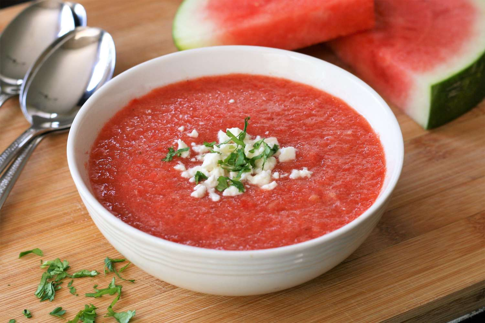

Watermelon Gazpacho

Description
Watermelon gazpacho is a refreshing and vibrant cold soup, perfect for hot summer days.
It blends the sweetness of ripe watermelon with the savory flavors of tomatoes, cucumbers,
bell peppers, and onions, all enhanced by a splash of vinegar and a hint of spice.
This chilled dish offers a delightful balance of sweet and tangy,
making it a light and hydrating appetizer or meal.
Ingredients
- 4 cups cubed seeded watermelon
- 2 plum tomatos
- 1 red bell pepper
- 1 English cucumber
- 2 tablespoons minced shallot
- 2 tablespoons fresh lime juice
- 1 tablespoon apple cider vinegar
- 1 teaspoon salt
Steps
-
Combine watermelon, tomatoes, red pepper, cucumber, shallot, lime juice, vinegar, salt, and pepper in a high-powered blender.
Blend until smooth, 20 to 30 seconds. Refrigerate for at least 1 hour to allow flavors to meld and soup to chill.
-
Stir gazpacho before serving, as it has a tendency to separate, and divide between 4 bowls. Top with feta cheese and cilantro.